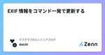
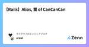

ラブグラフのエンジニアブログのフィード
https://zenn.dev/p/lovegraph
https://corporate.lovegraph.me 出張写真撮影サービス『ラブグラフ』やオンライン写真教室『ラブグラフアカデミー』を提供しています
フィード

【Rails】複合ユニークインデックスを変更したい時の手順
ラブグラフのエンジニアブログのフィード
こんにちは！ラブグラフエンジニアのひろです。今回は、複合ユニークインデックスを変更する際にMysql2::Error: Cannot drop index 'index_name': needed in a foreign key constraintというエラーに直面した時の解決策について書きます。例として、 profiles テーブルの user_id と handle_name による複合ユニークインデックスを削除し、 user_id と email による複合ユニークインデックスを作成するプロセスを用いて解説します。 前提条件profiles テーブルには u...
1日前

Rails で PDF を作ったけど、時代遅れのやり方だったかもしれない 31
31
ラブグラフのエンジニアブログのフィード
ラブグラフでエンジニアをしております横江( @yokoe24 )です！このあいだ PDF 出力機能の実装をしました！技術選定からその後の反省までをまとめます。 1. 技術選定PDF出力をおこなう Rails の gem は複数あります。まずはどの gem を使うか検討するために比較しました。（※ Ferrum, HexaPDF, Grover は、この記事を書くにあたって見つけたものなので、当時は選定対象ではありませんでした）gem名スター数main,masterへの最終コミット最新バージョンリリース日初回バージョンリリース日Prawn4.6k...
6日前

EXIF 情報をコマンド一発で更新する 1
ラブグラフのエンジニアブログのフィード
皆さんこんにちは！ラブグラフエンジニアの関口です！突然ですが、皆さんは EXIF をご存知でしょうか？EXIF とは Exchangeable Image File Format の略で撮影日時やカメラの設定などの写真に関するデータを保存したものになります。詳しい説明はこちらの記事が分かりやすいです！https://zenn.dev/lovegraph/articles/559985737db6eaラブグラフのアプリケーションでは写真に関する機能実装をすることが多く、その際に EXIF 情報を利用します。今回の記事では EXIF 情報を扱う際に便利なツール ExifTool ...
9日前

【Rails】Alias, 罠 of CanCanCan
ラブグラフのエンジニアブログのフィード
こんにちは！ラブグラフ開発インターンの arawi です！Rails の CanCanCan gem を利用していたときに陥った罠についてお話します！https://github.com/CanCanCommunity/cancancan TL;DRCanCanCan では、デフォルトでアクションのエイリアスが設定されているそれを理解しておかないと予期しない挙動をすることがあるまた、CanCanCan のルールはあとに書いたものが優先される 発端あるリソースに対して、show は限られた id のものに絞って、 index はできないという権限を作りたいときがあり...
12日前

スタイルコーディングを早くする
ラブグラフのエンジニアブログのフィード
概要こんにちはラブグラフのエンジニアの熊谷です。今回はHTMLコーディングに関する内容を共有したいと思います。 フローの整理今回は以下の２つの視点から、効率的なスタイルコーディングの説明をしたいと思います。①環境構築（記述する作業のスピードを上げる）②スタイルコーディングする順番（組み立てるスピードを上げる）よろしくお願いします。 環境構築（記述する作業のスピードを上げる）まずは環境構築です。できるだけ考えること少なくしながら作業できるようにしていきましょう。 コード補完機能（Emmet）を使うテンプレートエンジンを使っている場合には、HTMLのコード補...
15日前
【Vue.js】props で渡された値の変更を検知したい
ラブグラフのエンジニアブログのフィード
こんにちは！ラブグラフエンジニアのひろです。Vue.js にて、 props で渡された値を使ってあれこれしたい時の方法を迷ったので、試したことをまとめます。 やりたかったこと親コンポーネントで動的に生成され props で渡される値に応じて、子コンポーネントの表示を切り替えたり、子コンポーネント側で値を変えて表示を切り替えたい。 悩んだこと子コンポーネントで props を直接変更するのは良くない[1]ので、 data で用意したプロパティに代入しようと考えました。しかし、今回 props で渡される値は親コンポーネントで動的に生成されるので、 created, mo...
20日前
git の Merge made by the 'ort' strategy. ってなんだ？！！
ラブグラフのエンジニアブログのフィード
ラブグラフのエンジニア、横江 (@yokoe24) です。みなさんは git コマンドで merge をしたことがありますか？ありますね！！（※ git を g でエイリアス振っていますが、 git merge develop です）merge をしたときの出力をよく見ると、地味に気になる一文があります。Merge made by the 'ort' strategy.なんでしょう、これ・・・？sort じゃなくて ort ・・・？気になったので調べてみました。https://softantenna.com/blog/git-2-33-released/すぐに出...
23日前
Active RecordでのNAND条件、NOR条件の書き方
ラブグラフのエンジニアブログのフィード
こんにちは！ラブグラフの開発チームでインターンシップをしているけいすけと申します。先日、Active RecordでNAND条件、NOR条件を書く機会があったのでまとめておきます。 NAND条件NANDとはNOT ANDの略で、ANDの否定をとったものです。日本語では否定論理積といいます。Aという条件とBという条件があるとき、A AND Bは、AとBがどちらもtrueのときにtrue、それ以外の場合はfalseになりますが、A NAND Bは、AとBがどちらもtrueのときにfalse、それ以外の場合はtrueになります。https://ja.wikipedia.org/...
1ヶ月前
開発業務に ChatGPT を活用しよう！！
ラブグラフのエンジニアブログのフィード
皆さんこんにちは！ラブグラフエンジニアのDaichiです！皆さんは開発業務の中で ChatGPT を利用していますか？私は日常的に ChatGPT を開発業務に活用しています。今回の記事ではその活用方法をいくつかご紹介しようと思います。!社外秘の情報やプロダクトコードなどはインプットしないことを前提に紹介していきます。ChatGPT を利用する際には社内固有の情報はインプットしないようにお気をつけください。 命名の候補出し利用する場面が圧倒的に多いのは関数や変数、DBに追加するカラムの命名に迷った時です。自分よりAIの方がボキャブラリーが多いため、選択肢の候補を出して...
1ヶ月前
Named Color をもっと使っていこう
ラブグラフのエンジニアブログのフィード
概要アプリケーションのカラーコード、皆さんどのように書いていますか？一般的には #FF00CC など、hex コードを利用していると思いますが、それでも Named Color のメリットもあると思うので、Named Color の魅力とその理由についてまとめていこうと思います。よろしくお願いします。 「Hex Color」か「RGB(RGBA) Color」が優れているところ元々 CSS では色指定に「Hex Color #00ff99」か「RGB(RGBA) rgb(244, 112, 132)」 などを使ってきていると思います。これらの色指定には、Named Col...
1ヶ月前
Webエンジニア初心者を抜けるための３つのバリデーション
ラブグラフのエンジニアブログのフィード
ラブグラフのエンジニア兼CTO、横江 (@yokoe24) です。この間インターンのかたに説明する機会があったので、こちらのブログでも。 3つのバリデーションサーバーサイドアプリケーションの制作にあたっては『３つのバリデーション』が必要になります。バリデーション とは、入力された値をチェックする仕組みのことです。データベースに変な値が保存されてアプリケーションが変な動きをしないために、バリデーションはとても大事なものです。そしてバリデーションは大きく３つ、フロントエンド のバリデーションサーバーサイド のバリデーションデータベース のバ...
1ヶ月前
数字や日付が連続しているかを判定する方法
ラブグラフのエンジニアブログのフィード
こんにちは！ラブグラフエンジニアのひろです。日付を一覧で表示する場所で、通常は 「2024年1月1日、2024年1月3日、2024年1月4日」 と羅列し、連続している日付だったら 「2024年1月1日~2024年1月3日」 のように省略して表示したいケースが出てきました。パッと方法がわからなかったので書き残しておきます。 方法each_cons(2).all? { |a, b| (b - a).to_i == 1 } を使いました。each_cons(2)で2つずつ値を取り出し、差分が1（つまり並んでいる）かどうかを検証していく方法です。（順番がバラバラの配列では機能しな...
2ヶ月前
Sassの!defaultっていつ使うの？
ラブグラフのエンジニアブログのフィード
こんにちは！ラブグラフ開発インターンのけいすけです。Sassの!defaultの使い所が分からなかったので調べてみました。 !defaultとは変数のデフォルト値を設定するための命令です。次のように変数の定義の後ろに!defaultと書くことで、変数のデフォルト値を設定できます。$black: #000 !default;挙動を細かくみていきましょう。公式のページSass: Variablesには次のように書いてあります。Sass provides the !default flag. This assigns a value to a variable only if ...
2ヶ月前
ActiveRecord の pluck, Ruby の map の違いと使い分け
ラブグラフのエンジニアブログのフィード
こんにちは、ラブグラフエンジニアの Daichi です！アプリケーション開発をしていると、DBから任意のカラムの値のみを取得したい場合があるかと思います。そんな時に ActiveRecord の pluck か Ruby の map メソッドを利用するかと思いますが、皆さんはその違いを意識されていますか？私は意識出来ていませんでした。そのため、今回の記事ではこの2つのメソッドの違いや使い分けをまとめていこうと思います。 対象読者出力内容が同じ以下２つの実装の内部挙動や違いが思い浮かばない方pluck と map をなんとなく利用している方Staff.all.pluc...
2ヶ月前
Git Client (Sourcetree) のススメ
ラブグラフのエンジニアブログのフィード
概要こんにちは、ラブグラフエンジニアの熊谷です。今回は Git 管理用のクライアントアプリ「Sourcetree」の魅力を共有したいと思います。よろしくお願いします。 Sourcetree とは？「Sourcetree」とは、Atlassian社が提供している Git のクライアントアプリです。自分は主に GitHub のリモートリポジトリと連携して利用しています。（もちろん GitLab や Bitbucket なども利用可能です）公式サイト: https://www.sourcetreeapp.com/※今回は、Git や Sourcetree の使い方について...
2ヶ月前
CodeRabbit を１ヵ月開発チームで実際に使ってみました！
ラブグラフのエンジニアブログのフィード
ラブグラフでCTOをしております横江( @yokoe24 )です！以前 Zenn で『もう初回コードレビューはAIに任せる時代になった - CodeRabbit -』という記事が流行りました。私たちのチームで実際に使ってみましたので、事前準備や使ってみての便利さ、どのくらいの料金がかかったのかについてお伝えいたします！ 事前準備ラブグラフの親会社であるMIXIでは、はたらく環境推進本部が中心となってAzure OpenAI Service の API キーの払い出しをおこなってくれています。また、『噂のAIレビューをAzure OpenAIでできるようにしてみた』の記...
2ヶ月前
VSCode Neovim Extension を使えば、修飾キーが1つ増えるぜ
ラブグラフのエンジニアブログのフィード
ラブグラフ開発インターンの arawi です。今日は Vim に関わる記事です。Vim は去年から使い始めてやっと慣れてきました。 TL;DRVim のノーマルモードではスペースキーを使わないから、スペースキーを使うキーバインディングを設定できるvscode neovim 必須級キーバインド4選を読んで、スペースキーが実質的に修飾キーとなることが大きな強みだと感じた VSCode Neovim Extension (vscode-neovim)VSCode で Neovim を使えるようになる拡張機能です。Vim と VSCode 双方の恩恵を受けることができ、...
2ヶ月前
社内問い合わせ担当になって得られたもの
ラブグラフのエンジニアブログのフィード
こんにちは！ラブグラフエンジニアのひろです！2024年の1記事目ということで、今年もよろしくお願いいたします！今回は、これまでずっとやってきた社内問い合わせ担当業務について書いていきます。 社内問い合わせ担当って？ラブグラフの Slack には #dev-request というエンジニア向けの問い合わせを書くチャンネルがあります。そこには社内のメンバーから質問や要望が届くこともあれば、ゲストからCSチームに届いた質問がエンジニアに届いたり （ラブグラフではお客様をゲストと呼んでいます） 、ラブグラフで撮影をしてくれているカメラマンさんからシステムの使い方についての質問が届く...
2ヶ月前
開発チームで2023年のグランプリを決めました🥇
ラブグラフのエンジニアブログのフィード
ラブグラフ開発チームの横江( @yokoe24 )です！2023年の M-1 もいよいよ終わって、オリンピックイヤーを迎えるところです。そんな中、ラブグラフの開発チームでも１番を決めました！✨『開発チーム One More 大賞 2023』 です！！ One More 大賞とは?!ラブグラフには行動指針として３つの VALUE があります。Number OneOne MoreOne Teamこれらそれぞれは半年ごとに全社での表彰があるのですが、開発におけるふだんの One More（ちょっとした工夫）ってなかなか他チームには伝わりません。ならば、 「今年は私...
3ヶ月前
問い合わせ対応の担当になって学んだこと・苦戦していること・工夫していること
ラブグラフのエンジニアブログのフィード
こんにちは、ラブグラフエンジニアの Daichi です！突然ですが、皆さんの開発チームではユーザーからの問い合わせや社内からのシステムに関する質問などをどのように対応していますか？うまく運用出来ているチームも悩みを持っているチームもそれぞれあるかと思います。私達の開発チームでは１人の先輩がメインで問い合わせ対応を担当していたのですが、数ヶ月前に私がラブグラフ開発チーム内で問い合わせ対応担当になりました。(全ての問い合わせ担当ではなく、量が多いときなどは他のメンバーにもサポートしてもらいながら対応しています)今回の記事では問い合わせ対応から学びになったこと、苦戦したことを共有し...
3ヶ月前